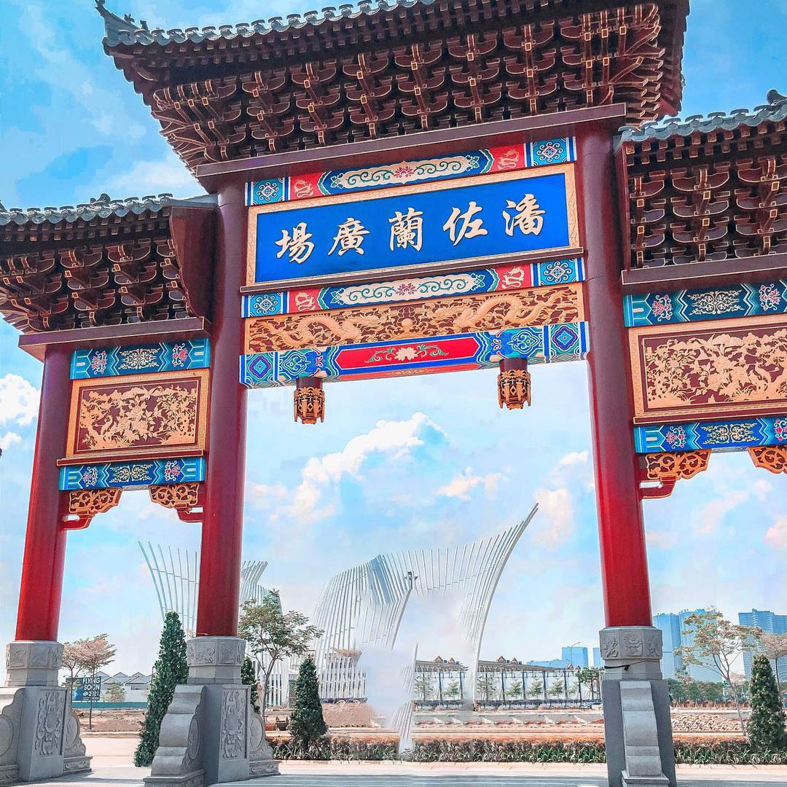
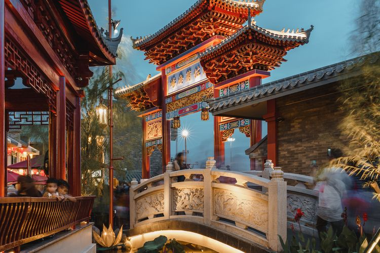
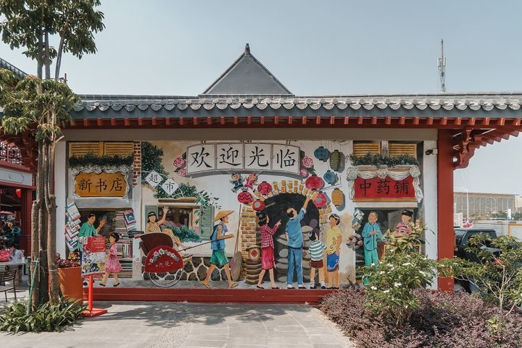
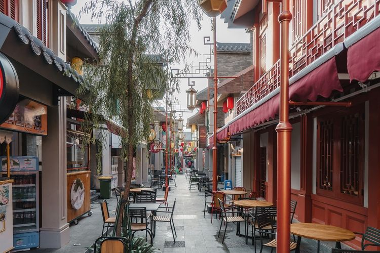
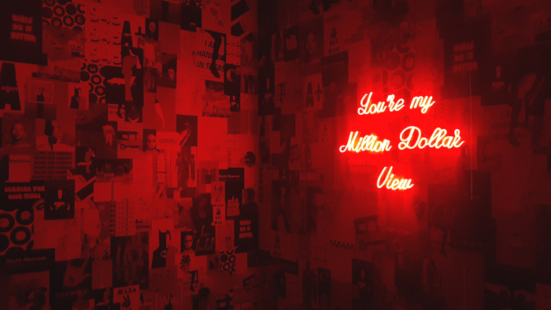
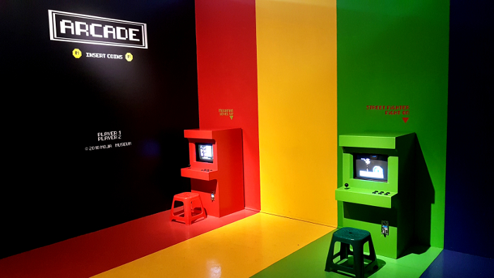
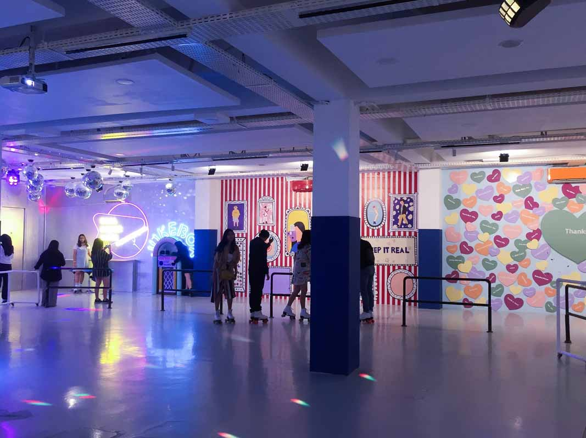

Pantjoran PIK2

Pantjoran PIK berada di pesisir Jakarta Utara ini dikhususkan sebagai kawasan kuliner baru yang terinspirasi
dari kawasan Pancoran Kota, Jakarta Barat.
Ada berbagai tempat makan, mulai dari jajanan kaki lima legendaris, hidangan peranakan, hingga menu tradisional
yang hanya dapat ditemui di Pantjoran PIK.
Sebagai penanda, ada gapura ikonik di kawasan kuliner Pantjoran PIK. Pengunjung juga dapat berfoto di spot foto
yang tersedia. Banyak dinding di Pantjoran PIK dihiasi mural artistik, seperti pertandingan kungfu, pasar serba
ada, penampilan barongsai, kedai teh, dan tempat penempa pedang.
Selain mural, sebanyak 8 diorama hasil karya seniman, Gladys Teo-Simpson tersebar di area Pantjoran PIK. Diorama
tersebut mewakili cerita-cerita menarik tentang budaya dan kawasan Pantjoran yang menginspirasi, yang dapat menjadi
hiburan dan sarana edukasi, saat wisata kuliner.
Review



Resource
link: https://www.kompas.com/food/read/2020/11/23/161412175/pantjoran-pik-resmi-dibuka-destinasi-kuliner-baru-di-jakarta-utara?page=all
Moja Museum

Museum tidak selamanya menyajikan benda prasejarah dan terkesan tua. Moja Museum Jakarta, justru menyajikan
benda – benda milenial yang dikemas dengan sangat indah. Tujuan utama dari adanya Museum ini sendiri adalah
sebagai wahana untuk berfoto.
Museum of Jakarta, atau dikenal sebagai Moja menjadi tempat seru untuk berlibur. Perpaduan karya seni yang
unik menjadikannya favorit anak milenial.
Museum ini sangat cocok bagi penggemar foto. Beragam spot foto menawan bisa didapat dengan sangat mudah.
Warna-warni museum akan menambah keceriaan ketika berada di sini. Berikut beberapa hal yang bisa dilakukan
di Museum Of Jakarta.
Review



Resource
link: //travelspromo.com/htm-wisata/moja-museum-jakarta/